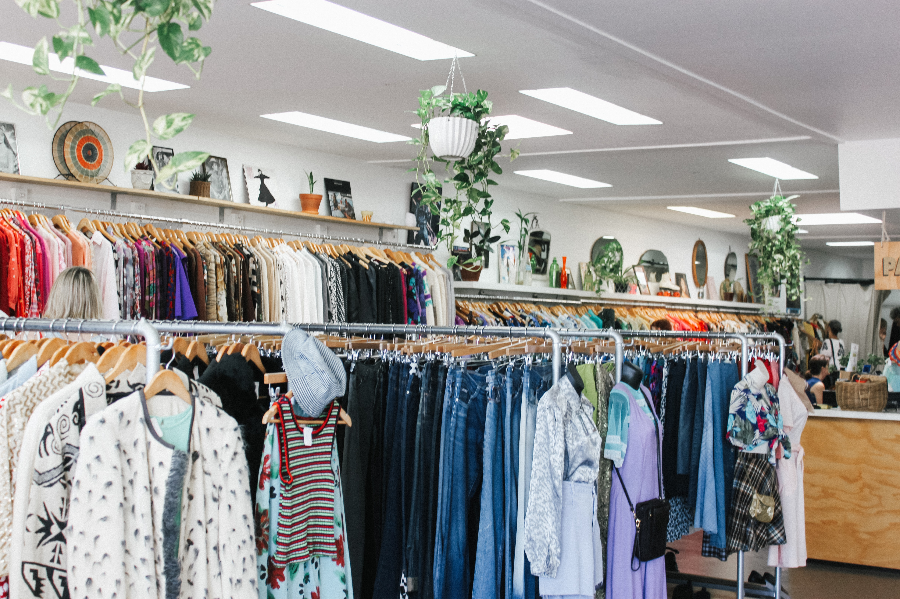
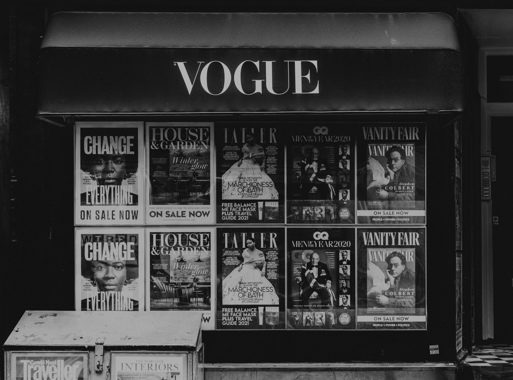

Mission Statement
Expand the fashion industry: fashion is for everyone & so everyone must be included. Diversity, equity, and inclusion are critical to create a more fair and positive society.

The Problem
For a large majority of the world, it is rare to see people who look like them in fashion magazines, store catalogs, & brand advertisements. Whether it has to do with size, race, ethnicity, sexual orientation, gender identification, etc.: everyone must be represented. There are also many clothing stores that don't carry clothes for certain ranges of sizes. This can lower people's self-esteems and make them feel like there's something wrong with them.
For example, many companies have "one-size fits all" clothing which can only fit people up till a certain size. People who are larger or smaller than these brands' idea of "average" cannot typically fit into these clothes. Not only that, but it is not as common to see models with race or ethnicities such as Black, Native American, South Asian, Latino or Hispanic, Southeast Asian, East Asian, etc. as compared to others in the fashion industry. This disheartens countless individuals and creates an unfair "beauty" standard that hurts self-confidence.

Our Purpose
We want to advocate for a fashion industry that is inclusive of ALL people. People of all shapes, sizes, race, ethnicities, sexual orientation, gender identification, and backgrounds must be represented.
